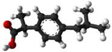

El Ibuprofeno forma parte de una clase de medicamentos llamados antiinflamatorios no esteroides. Los estudios clínicos demuestran que cuando se siguen las instrucciones correctamente, el ibuprofeno es un analgésico seguro y eficaz.
Fabogesic es un ibuprofeno que te ayuda a aliviar cualquier tipo de dolor que puede presentarse en tu organismo como los dolores de cabeza, posturales y muchos otros, que detallamos en esta misma página.
Fabogesic proporciona un alivio rápido a cualquier síntoma de dolor.
Los medicamentos, incluidos IBUXIM, pueden provocar efectos secundarios. Usted no debe tomar más de la dosis recomendada, ya que aumentará el risego de efectos secundarios.
Para maximizar los beneficios y reducir los riesgos, es importante la utilización de medicamentos de venta libre de manera responsable y de acuerdo a la etiqueta y hablar con un médico o farmacéutico si tiene alguna pregunta.
